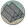

Requires
- Buildings:

- Arts:

- Resources: 
Enables


Basic Building Statistics (can be modified by difficulty level, arts, skills, traits and retainers)
- Cost: 4000
- -1 to sword samurai recruitment times in this province
Description
The edge is the dividing line between life and death.
The sword master school both improves the quality of sword-armed units recruited here and reduces the amount of time needed to train them. A sword takes many weeks of patient labour to forge, but the swordsman takes even longer. The sword is the soul of the samurai, and long hours of practice are necessary to master this apparently simple weapon. A kenjutsu school was more than a building: it was also the philosophy and ideas of its teachers and leaders, and each had its own style of combat and teaching. Although all schools shared the idea of kata, or forms, for practice, how these were used could vary greatly. Rivalry between schools was, at times, quite fierce, almost bordering on feuds, and duels to settle which school had the best style were not uncommon. The sword saint, Miyamoto Musashi, was, at one point in his career, particularly given to duelling with adepts from different schools. In his most famous duel he used a bokken, or wooden practice sword, against a man armed with a no-dachi. Accounts differ as to how his opponent, Sasaki Kojiro, died (and even as to why they fought) but all agree that Musashi beat him with a wooden blade!